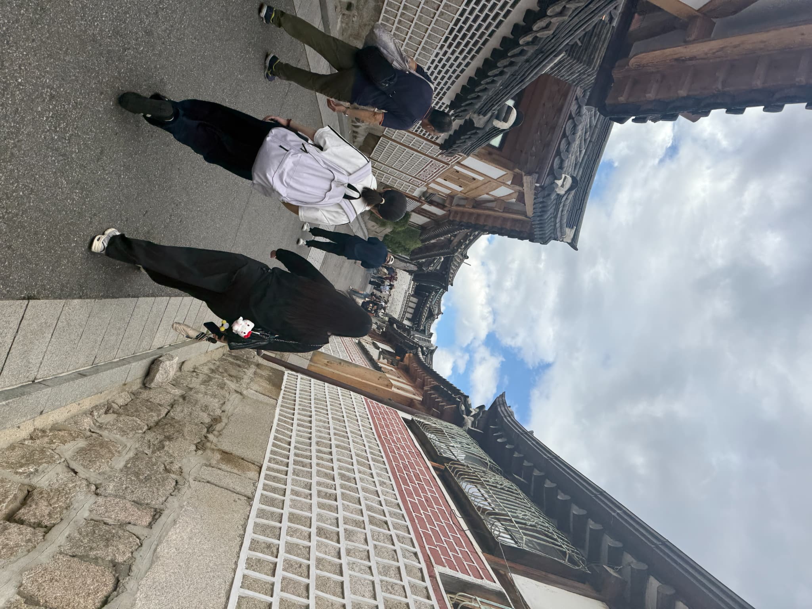
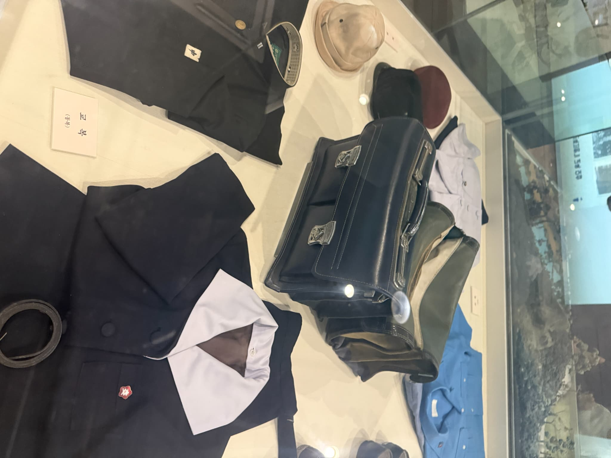
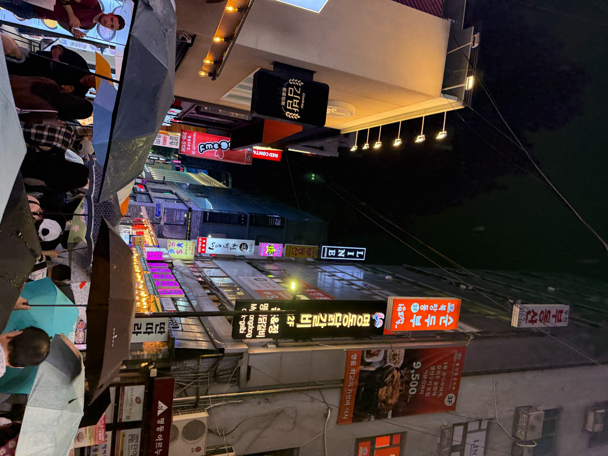

韓国の名所 — 景福宮・明洞・中華街
景福宮（Gyeongbokgung）

朝鮮王朝時代の王宮で、壮麗な建築と広大な庭園が見どころです。韓服（チマチョゴリ）を着て観光するのも人気です。

近くには昔から官僚などが住んでいた地域があります。

徒歩圏内に無料で入れる博物館があります。
明洞（Myeongdong）

ソウルを代表する繁華街で、コスメやファッション、屋台グルメが楽しめます。夜も賑やかで観光客に大人気のエリアです。
中華街（tyuukagai）

インチョンの近くにある中華街で華僑の方が今も変わらずに生活しています。昔から外交関係の拠点として栄え他国の疎開地として残っています。日本の植民地になっていた痕跡もあり近代史をより近くに感じられます。